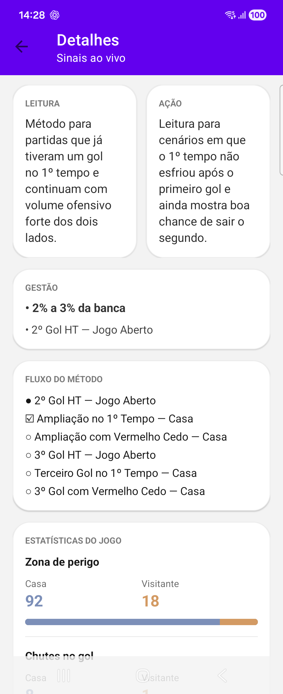
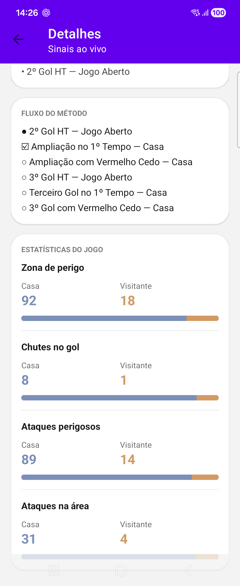

Como funciona
Como a Play Store exige testers liberados previamente no teste fechado, o processo funciona assim.
Solicite acesso
Preencha o formulário com o e-mail da conta Google usada na Play Store do seu Android.
Aguarde a liberação
Depois que o seu e-mail for liberado no teste fechado, você poderá seguir para a instalação.
Instale o app
Com o acesso liberado, abra o link do teste no celular, toque em “Become a tester” e depois instale pela Play Store.
Veja o app
Algumas telas do Fut Sinais para você reconhecer o app antes de instalar.




Vídeo explicativo
Veja um exemplo da Fut Sinais explicando a leitura das análises e o funcionamento das telas.
Pré-cadastro
Use um Google Form para coletar nome, e-mail da conta Google da Play Store e telefone opcional.
Campo obrigatório
E-mail da conta Google usada na Play Store. Sem esse dado, o acesso ao teste não poderá ser liberado.
Campo opcional
WhatsApp ou Telegram para você avisar quando o acesso for aprovado e reenviar os links do teste.
Botão do formulário
Substitua https://forms.gle/GnccCZQskp14dbz78 pelo link do seu formulário antes de publicar a página.